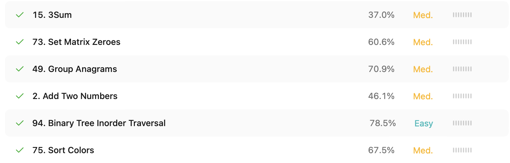

Leetcodes

3Sum
Решение находит все уникальные тройки чисел в массиве, сумма которых равна нулю (a + b + c = 0). Сначала массив сортируется, чтобы можно было эффективно использовать двухуказательный подход. Для каждого элемента nums[i] устанавливаются два указателя — left (справа от i) и right (в конце массива). Сумма тройки nums[i] + nums[left] + nums[right] сравнивается с нулем:
-
если сумма равна 0, найдено решение, и указатели сдвигаются, пропуская дубликаты;
-
если сумма меньше 0, сдвигается left;
-
если больше 0 — right. Пропуск дубликатов помогает избежать повторяющихся троек.
Сложность: O(n^2) по времени, O(k) по памяти для хранения результата (где k — количество уникальных троек).
Set Matrix zeroes
Если хотя бы один элемент в матрице равен нулю, то вся строка и столбец, в котором он находится, должны быть обнулены. Решение делает два прохода по матрице:
-
В первом проходе запоминаются индексы всех строк и столбцов, где найден 0.
-
Во втором проходе по этим индексам зануляются соответствующие строки и столбцы.
Сложность: O(mn) по времени, O(m + n) по памяти, где m и n — размеры матрицы.
Group Anagrams
Необходимо сгруппировать слова, которые являются анаграммами друг друга. Анаграммы имеют одинаковый набор букв, поэтому каждое слово сортируется и используется как ключ в словаре. Например, "eat", "tea", "ate" после сортировки становятся "aet" — это ключ для их группы. Словарь defaultdict(list) собирает списки анаграмм по этим ключам.
Сложность: O(n * k log k) по времени, где n — число слов, k — средняя длина слова. Используется память для словаря и хранения групп.
Add Two Numbers
Сложение двух неотрицательных чисел, представленных в виде перевёрнутых односвязных списков (l1, l2). Цифры хранятся поразрядно, начиная с младших. Проходим по обоим спискам одновременно, складывая соответствующие цифры и учитывая перенос (carry). Создаётся новый список, представляющий сумму в том же формате (младшие разряды — первыми).
Сложность: O(max(m, n)), где m и n — длины списков. Память — O(max(m, n)) на новый список.
Binary Tree Incoder Traversal
Нужно обойти бинарное дерево в порядке in-order: сначала левое поддерево, затем корень, потом правое. Реализованы два подхода:
-
Рекурсивный: простой и компактный, вызывает функцию обхода для left, затем добавляет val, затем для right.
-
Итеративный: без рекурсии, использует стек для имитации глубины обхода. Сначала спускаемся влево до конца, затем обрабатываем узлы и переходим вправо.
Сложность: O(n) по времени и O(n) по памяти в худшем случае (глубина дерева или стек).
Sort Colors
Задача заключается в том, чтобы отсортировать массив, содержащий только элементы 0, 1 и 2, представляющие цвета: красный (0), белый (1), синий (2). Решение использует алгоритм Dutch National Flag, который работает за один проход и использует три указателя:
-
low — указывает на границу для 0;
-
mid — текущий элемент;
-
high — граница для 2.
При проходе по массиву:
-
Если nums[mid] == 0: меняем с nums[low], двигаем low и mid;
-
Если nums[mid] == 1: просто двигаем mid;
-
Если nums[mid] == 2: меняем с nums[high], уменьшаем high.
Сложность: O(n) по времени — каждый элемент обрабатывается максимум один раз. O(1) по памяти — сортировка выполняется на месте без дополнительной памяти.